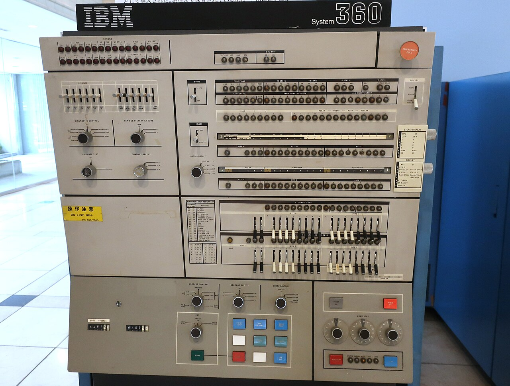

AI 智慧理賠
理賠立案到派件全自動執行理賠立案到派件，精確解析診斷書，節省逾80%人工作業時間
AI 智能理賠解決方案識別認證
digiRunner 支援 OAuth 2.0 認證、OIDC (OpenID Connect) 與 API Key 授權方式
針對金融檢查，完善 API 管理
AI 使用歷程
即時主控台完整保留 API 活動與軌跡

即時主控台完整保留 API 活動與軌跡一個 API 請求通過金融檢查，接進核心銀行系統。介面示意。
開放銀行、金融檢查與政府 API 規範的要求，digiRunner 已有對應功能，專案不必從零設計合規架構。
銀行與保險公司導入 API 管理平台時，開放銀行與金融檢查的要求已經對應好。
政府單位建置 API 管理平台時，共通性規範與惡意行為防護已經內建。
三則案例都是金融保險的日常作業，每一則都有可以引用的成果。
全自動執行理賠立案到派件，精確解析診斷書，節省逾80%人工作業時間
AI 智能理賠解決方案透過免模板辨識醫療單據解決格式變動痛點，提升辨識率並降低40%維護人力
AI 智慧建檔解決方案標準化聯防流程，詐騙事件即時共享，提升跨行交換的效率與透明度
看所有成功案例核心系統與大型主機透過 API 接進來，AI 模型也走同一道 Gateway。
整合 MCP 協定與 AI Gateway 架構，讓 AI 模型安全串接企業 API、資料與業務流程
digiRunner API 管理平台、digiLogs 集中化日誌管理平台、digiMars 大數據管理平台、digiFlexis 企業流程管理平台、digiCare 智慧醫療服務
依場景選擇合適的大語言模型，從智能客服、語音質檢到文件辨識都有產品。
SysTalk.ai 支援主流開源與企業級 LLM（如 70B 模型），企業可依場景選擇最合適的模型
OrientAI 企業級 Agentic AI 平台、SysTalk.Chat AI 智能客服、SysTalk.VIKI 企業生成式 AI 應用平台、SysTalk.Coach AI 業務培訓、SysTalk.Audit AI 語音質檢、SysTalk.ICR AI 智慧光學字元辨識、SysTalk.RPA 流程自動化、AI 智能理賠解決方案、AI 智慧建檔解決方案
碳盤查、產品碳足跡與 CBAM 申報資料，用同一套平台整理。
碳盤查 盤查企業自身碳排放 包括跨地區/廠區/設備/系統
CBAM 自動文件資訊化碳排 並產出申報清冊
碳足跡 計算企業產品碳足跡 計算相關供應鏈碳足跡
GreenSwift 智慧碳管理平台、ElectriSwift 智慧能源管理系統
登入
FIDO2 無密碼 零信任身分驗證
以 FIDO2 驗證利用機器學習模型分析日誌並檢測異常，能快速識別入侵與攻擊
使用者登入不必用密碼，系統日誌裡的入侵與攻擊由機器學習找出來。
FIDO2 無密碼 零信任身分驗證
利用機器學習模型分析日誌並檢測異常，能快速識別入侵與攻擊
gadoDIDO 無密碼身分驗證、gadoScout AI 異常偵測系統
OrientAI 只部署在企業端，資料的掌控權在企業手上。Agent 的權限、影子 AI 與 Token 用量都有管控；搭配群聯 aiDAPTIV，地端架構離線也能運行。
認識 OrientAIOrientAI 只會部署於企業端
突破算力與容量限制
Token 用量監控與資源配置最佳化
昕力自己研發產品，也負責導入規劃、模型設定、建置與應用模組設計，決策者不必在產品原廠和導入廠商之間協調。
昕力資訊提供完整的導入規劃、模型設定、建置與應用模組設計服務
導入前AI 導入情境分析
導入前
導入中
紀錄
填寫聯絡表單，說明您的產業、現有系統與想接上的服務，昕力的業務會與您聯絡。
聯絡業務service@tpisoftware.com +886 2 2658 0508 114台北市內湖區瑞光路335號12樓 回覆時間：待補